Source: AVEVA Application Server 2023 Training Manual, Module 4, Lab 6 (pages 4-17 to 4-30)
Hands-on lab — create derived templates for meter devices, configure attributes, create instances, and deploy them.
Reference: Module 4, Lab 6 (pages 4-17 to 4-18)
The lab follows this sequence:
$Meter derived template from $UserDefined$Level, $Temperature) derived from $MeterReference: Module 4, Lab 6 (pages 4-17 to 4-19)
In the IDE, open the Templates pane. You should see the Application folder with the default templates: $AnalogDevice, $DiscreteDevice, $Sequencer, $SQLData, and $UserDefined. The Training > Global folder also contains derived templates from earlier labs.
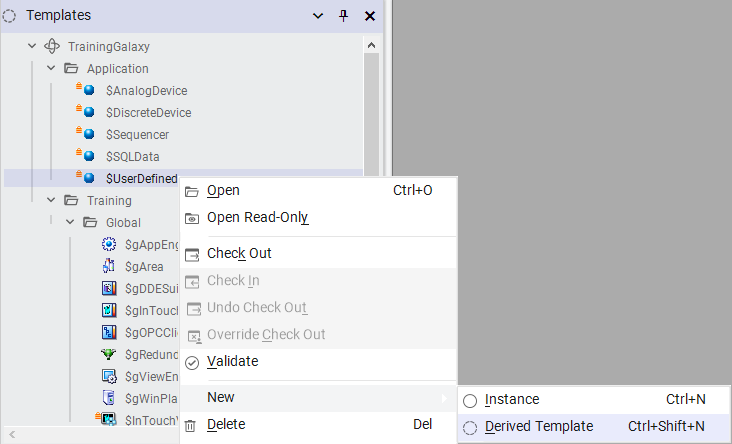
Right-click $UserDefined → New → Derived Template. Name it $Meter. This makes $UserDefined the parent template of $Meter, meaning $Meter inherits all attributes from $UserDefined.
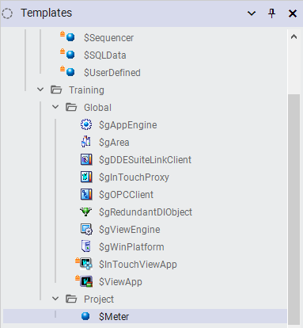
Reference: Module 4, Lab 6 (pages 4-19 to 4-20)
Open the $Meter template in the Object Editor. The PV attribute needs to be configured to read a floating-point value from an IO device.
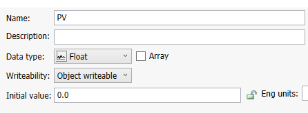
| Property | Value | Why |
|---|---|---|
| Attribute Type | Float | Meters produce continuous analog values (flow, pressure, etc.) |
| I/O Source | I/O Read | The PV reads its value from a field device via an IO device |
| I/O Name | IODev1_... | Maps to the IO device and tag for this attribute |
Reference: Module 4, Lab 6 (pages 4-20 to 4-21)
After configuring the PV attribute, check in the $Meter template. Check-in saves the template to the Galaxy database and makes it available for deriving further templates or creating instances.
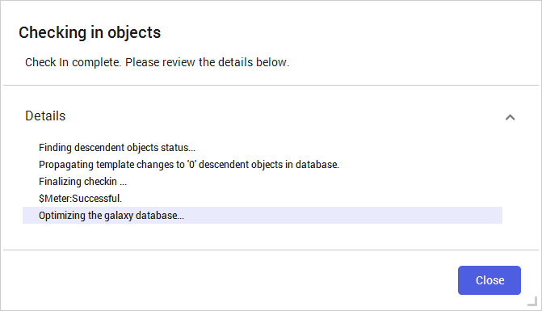
Reference: Module 4, Lab 6 (pages 4-21 to 4-23)
Now create two specialized templates derived from $Meter. These represent specific types of metering instruments.
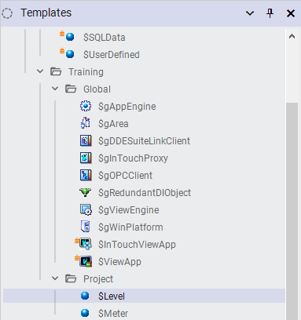
| Template | Derived From | Purpose |
|---|---|---|
$Level | $Meter | Level transmitter — measures liquid level in a tank |
$Temperature | $Meter | Temperature sensor — measures process temperature |
$UserDefined → $Meter → $Level / $Temperature$Level and $Temperature both get the PV attribute from $Meter, which got it from $UserDefined. You can add template-specific attributes (e.g., engineering units) in the child templates.
Reference: Module 4, Lab 6 (pages 4-23 to 4-25)
Instances are the actual runtime objects that represent real equipment. Create:
L1 — an instance of $Level (representing a real level transmitter)T1 — an instance of $Temperature (representing a real temperature sensor)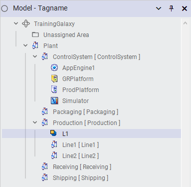
Instances are created in the Application folder (or a subfolder). Each instance has a unique name and its own attribute values, but shares the template's structure (attributes, scripts, alarms).
| Instance | Template | PV Value (example) | Represents |
|---|---|---|---|
L1 | $Level | 75.3 | Level transmitter on Tank 1 |
T1 | $Temperature | 185.6 | Temperature sensor on Heat Exchanger |
Reference: Module 4, Lab 6 (pages 4-25 to 4-27)
The IO Devices view is where you map template attributes to real field device tags. Application Server uses Autobind to automatically match attribute names to IO tags.
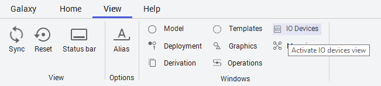
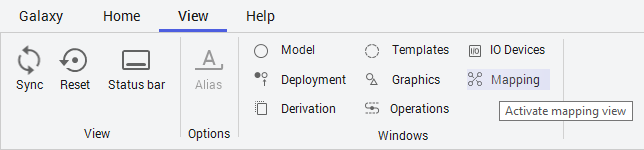
IODev1_L1_PV), Autobind automatically resolves the tag path at deployment time. This means you don't have to manually map each attribute — the naming convention handles it.
<IODevice>_<Instance>_<Attribute>Reference: Module 4, Lab 6 (pages 4-27 to 4-29)
With templates, instances, and IO mapping configured, the final step is deployment. Deployment pushes your galaxy objects to the Application Server runtime.
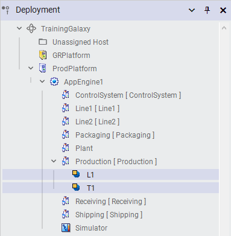
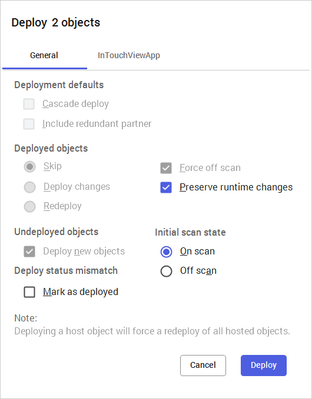
Reference: Module 4, Lab 6 (pages 4-29 to 4-30)
After deployment, use the Object Viewer to verify that your instances are running and reading live values.
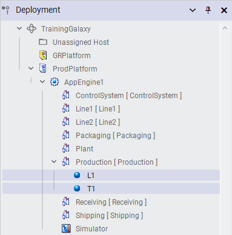
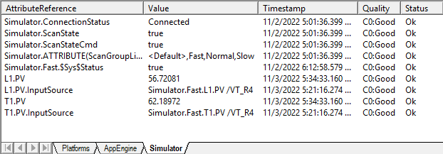
| Step | Action | Key Concept |
|---|---|---|
| 1 | Create $Meter from $UserDefined | Template inheritance |
| 2 | Configure PV as Float / I/O Read | Attribute configuration |
| 3 | Create $Level, $Temperature from $Meter | Template hierarchy |
| 4 | Create instances L1, T1 | Instance vs. Template |
| 5 | Configure IO device Autobind | IO mapping to field devices |
| 6 | Deploy to runtime | Check-in → Deploy → Verify |
| 7 | Verify in Object Viewer | Runtime monitoring |
Q1: What is the parent template of $Meter in this lab?
$UserDefined — $Meter is a derived template with $UserDefined as its parent.
Q2: Why is the PV attribute configured as Float rather than Integer?
Meter readings are continuous analog values (e.g., 123.456) that require decimal precision. Float supports fractional values; Integer does not.
Q3: What is the relationship between $Meter, $Level, and $Temperature?
$Level and $Temperature are both derived from $Meter. They form a three-level hierarchy: $UserDefined → $Meter → $Level/$Temperature. Both $Level and $Temperature inherit the PV attribute from $Meter.
Q4: What must you do before deploying objects to the runtime?
You must check in all templates and instances. Unchecked-in objects exist only in the IDE session and cannot be deployed.
Q5: What does Autobind do in the IO device configuration?
Autobind automatically resolves attribute IO names (following a naming convention) to actual field device tags at deployment time, eliminating the need for manual tag mapping.